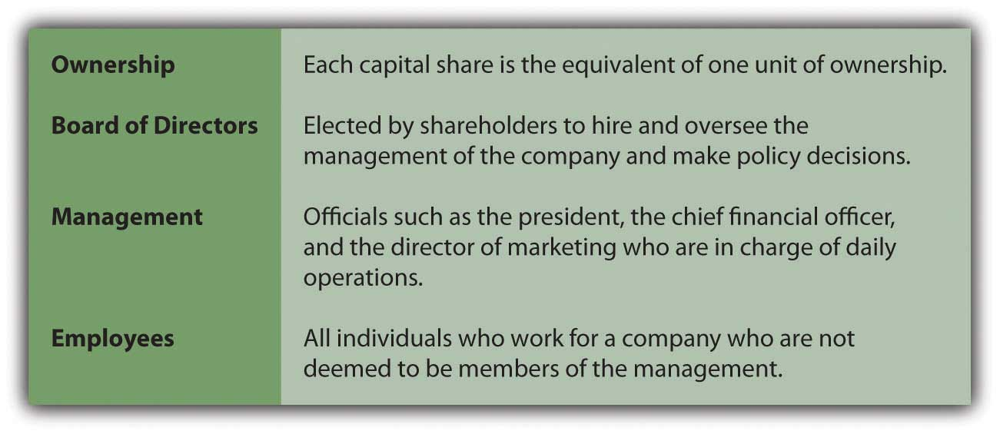

Joe introduces the course objectives and Chapter 1 "Why Is Financial Accounting Important?".
At the end of this section, students should be able to meet the following objectives:
Question: This textbook professes to be an introduction to financial accounting. A logical place to begin such an exploration is to ask the obvious question: What is financial accounting?
Answer: In simplest terms, financial accountingThe communication of financial information about a business or other type of organization to external audiences in order to help them assess its financial health and prospects. is the communication of information about a business or other type of organization (such as a charity or government) so that individuals can assess its financial health and prospects. Probably no single word is more relevant to financial accounting than “information.” Whether it is gathering financial information about a specific organization, putting that information into a structure designed to enhance communication, or working to understand the information being conveyed, financial accounting is intertwined with information.
In today’s world, information is king. Financial accounting provides the rules and structure for the conveyance of financial information about businesses (and other organizations). At any point in time, some businesses are poised to prosper while others teeter on the verge of failure. Many people are seriously interested in evaluating the degree of success achieved by a particular organization as well as its prospects for the future. They seek information. Financial accounting provides data that these individuals need and want.
organization → reports information based on the principles of financial accounting → individual assesses financial health
Question: Every semester, most college students are enrolled in several courses as well as participate in numerous outside activities. All of these compete for the hours in each person’s day. Why should a student invest valuable time to learn the principles of financial accounting? Why should anyone be concerned with the information communicated about an organization? More concisely, what makes financial accounting important?
Answer: Many possible benefits can be gained from acquiring a strong knowledge of financial accounting and the means by which information is communicated about an organization. In this book, justification for the serious study that is required to master the subject matter is simple and straightforward: obtaining a working knowledge of financial accounting and its underlying principles enables a person to understand the information conveyed about an organization so that better decisions can be made.
Around the world, millions of individuals make critical judgments each day about the businesses and other organizations they encounter. Developing the ability to analyze financial information and then using that knowledge to arrive at sound decisions can be critically important. Whether an organization is as gigantic as Wal-Mart or as tiny as a local convenience store, a person could have many, varied reasons for making an assessment. As just a single example, a recent college graduate looking at full-time employment opportunities might want to determine the probability that Company A will have a brighter economic future than Company B. Although such decisions can never be correct 100 percent of the time, knowledge of financial accounting and the information being communicated greatly increases the likelihood of success. As Kofi Annan, former secretary-general of the United Nations, has said, “Knowledge is power. Information is liberating.”See http://www.deepsky.com/~madmagic/kofi.html.
Thus, the ultimate purpose of this book is to provide students with a rich understanding of the rules and nuances of financial accounting so they can evaluate available information and then make good choices about those organizations. In the world of business, most successful individuals have developed this talent and are able to use it to achieve their investing and career objectives.
Question: Knowledge of financial accounting assists individuals in making informed decisions about businesses and other organizations. What kinds of evaluations are typically made? For example, assume that a former student—one who recently graduated from college—has been assigned the task of analyzing financial data provided by Company C. What real-life decisions could a person be facing where an understanding of financial accounting is beneficial?
Answer: The number of possible judgments that an individual might need to make about a business or other organization is close to unlimited. However, many decisions deal with current financial health and the prospects for future success. In making assessments of available data, a working knowledge of financial accounting is invaluable. The more in-depth the understanding is of those principles, the more likely the person will be able to use the available information to arrive at the best possible choice. Common examples include the following:
Success in life—especially in business—frequently results from making appropriate decisions. Many economic choices, such as those described above, depend on the ability to understand and make use of the financial information that is produced and presented about an organization in accordance with the rules and principles underlying financial accounting.
Link to multiple-choice question for practice purposes: http://www.quia.com/quiz/2092614.html
Question: A great number of possible decisions could be addressed in connection with an organization. Is an understanding of financial accounting relevant to all business decisions? What about the following?
Answer: Organizational decisions such as these are extremely important for success. However, these examples are not made about the reporting organization. Rather, they are made within the organization in connection with some element of its operations.
The general term “accounting” refers to the communication of financial information for decision-making purposes. Accounting is then further subdivided into (a) financial accounting and (b) managerial accountingThe communication of financial information within an organization so internal decisions can be made in an appropriate manner..Tax accounting serves as another distinct branch of accounting. It is less focused on decision making and more on providing the information needed to comply with all government rules and regulations. Even in tax accounting, though, decision making is important as companies seek to take all possible legal actions to minimize tax payments. Financial accounting is the subject explored in this textbook. It focuses on conveying relevant data (primarily to external parties) so that decisions can be made about an organization (such as Motorola or Starbucks) as a whole. Thus, questions such as the following all fall within the discussion of financial accounting:
They relate to evaluating the financial health and prospects of Company C as a whole.
Managerial accounting is the subject of other books and other courses. This second branch of accounting refers to the communication of information within an organization so that internal decisions (such as whether to buy or rent a building) can be made in an appropriate manner. Individuals studying an organization as a whole have different goals than do internal parties making operational decisions. Thus, many unique characteristics have developed in connection with each of these two branches of accounting. Financial accounting and managerial accounting have evolved independently over the decades to address the specific needs of the users being served and the decisions being made. This textbook is designed to explain those attributes that are fundamental to attaining a usable understanding of financial accounting.
It is not that one of these areas of accounting is better, more useful, or more important than the other. Financial accounting and managerial accounting have simply been created to achieve different objectives. They both do their jobs well; they just do not have the same jobs.
Link to multiple-choice question for practice purposes: http://www.quia.com/quiz/2092571.html
Question: Financial accounting refers to the conveyance of information about an organization as a whole and is most frequently directed to assisting outside decision makers. Is there any reason for a person who is employed by a company to care about the financial accounting data reported about that organization? Why should an employee in the marketing or personnel department of Company C be interested in the financial information that it distributes?
Answer: As indicated, financial accounting is designed to portray the overall financial condition and prospects of an organization. Every employee should be quite interested in assessing that information to judge future employment prospects. A company that is doing well will possibly award larger pay raises or perhaps significant end-of-year cash bonuses. A financially healthy organization can afford to hire new employees, buy additional equipment, or pursue major new initiatives. Conversely, when a company is struggling and prospects are dim, employees might anticipate layoffs, pay cuts, or reductions in resources.
Thus, although financial accounting information is often directed to outside decision makers, employees should be vitally interested in the financial health of their own organization. No one wants to be clueless as to whether their employer is headed for prosperity or bankruptcy. In reality, employees are often the most avid readers of the financial accounting information distributed by their employers because the results can have such an immediate and direct impact on their jobs and, hence, their lives.
Financial accounting encompasses the rules and procedures to convey financial information about an organization. Individuals who attain a proper level of knowledge of financial accounting can utilize this information to make decisions based on the organization’s perceived financial health and outlook. Such decisions might include assessing employment potential, lending money, granting credit, and buying or selling ownership shares. However, financial accounting does not address issues that are purely of an internal nature, such as whether an organization should buy or lease equipment or the level of pay raises. Information to guide such internal decisions is generated according to managerial accounting rules and procedures that are introduced in other books and courses. Despite not being directed toward the inner workings of an organization, employees are interested in financial accounting because it helps them assess the future financial prospects of their employer.
At the end of this section, students should be able to meet the following objectives:
Question: Above, in discussing the possible decisions that could be made about an organization, ownership shares were mentioned. Occasionally, on television, in newspapers, or on the Internet, mention is made that the shares of one company or another have gone up or down in price during that day because of trading on one of the stock markets. Why does a person or an organization acquire ownership shares of a business such as Capital One or Intel?
Answer: In the United States, as well as in many other countries, owners of a business or other type of organization can apply to the state government to have it identified as an entity legally separate from its owners. This process is referred to as incorporationLegal process by which owners of an organization apply to a state government to have it identified as an entity legally separate from its owners (a corporation); corporations are the legal form of most businesses of any size in the United States.. Therefore, a corporationAn organization that has been formally recognized by the state government as a legal entity so that it can sell ownership shares to raise money for capital expenditures and operations; business is legally separate from its owners through incorporation. is an organization that has been formally recognized by the government as a legal entity. A business that has not been incorporated is legally either a sole proprietorshipA business created, owned, and operated by a single individual; business is not legally separate from its owner through incorporation. (one owner) or a partnershipA business created, owned, and operated by more than one individual; business is not legally separate from its owners through incorporation. (more than one owner).
As will be discussed in detail in Chapter 16 "In a Set of Financial Statements, What Information Is Conveyed about Shareholders’ Equity?", several advantages can be gained from incorporation. For one, a corporation has the ability to issue (sell) shares to obtain monetary resources and allow investors to become owners (also known as stockholdersIndividuals or organizations that hold the ownership shares of stock of a corporation; same as shareholders. or shareholdersIndividuals or organizations that hold the ownership shares of stock of a corporation; same as stockholders.). The Walt Disney Company and General Electric, as just two examples, are corporations. They exist as legal entities completely distinct from the multitude of individuals and organizations that possess their ownership shares (also known as equity or capital stockOwnership (equity) shares of stock in a corporation that are issued to raise financing for capital expenditures and operations.).
Any investor who acquires one or more capital shares of a corporation is an owner and has rights that are specified by the state government or on the stock certificate. The number of shares and owners can be staggering. At the end of 2008, owners held over 2.3 billion shares of The Coca-Cola Company. Thus, possession of one share of The Coca-Cola Company at that time gave a person approximately a 1/2,300,000,000th part of the ownership.Sole proprietorships and partnerships rarely sell capital shares. Without the legal authority of incorporation, a clear distinction between owner and business often does not exist. For example, debts incurred by the business may ultimately have to be satisfied by the owner personally. Thus, individuals tend to avoid making investments in unincorporated businesses unless they can be involved directly in the management. For that reason, active trading of partnership and proprietorship ownership interests is usually limited or nonexistent. One of the great advantages of incorporation is the ease by which capital stock can usually be exchanged. Investors frequently buy or sell such shares on stock exchanges in a matter of moments. However, partnerships and sole proprietorships still remain popular because they are easy to create and offer possible income tax benefits as will be discussed in a future chapter.
If traded on a stock exchange, shares of the capital stock of a corporation continually go up and down in value based on myriad factors, including the perceived financial health and prospects of the organization. As an example, during trading on December 4, 2009, the price of an ownership share of Intel rose by $0.59 to $20.46, while a share of Capital One went up by $1.00 to $37.92.
For countless individuals and groups around the world, the most popular method of investment is through the purchase and sell of these shares of corporate ownership. Although a number of other types of investment opportunities are available (such as the acquisition of gold or land), few evoke the level of interest of capital stock.The most prevalent form of capital stock is common stock so that these two terms have come to be used somewhat interchangeably. As will be discussed in a later chapter, the capital stock of some corporations is made up of both common stock and preferred stock. On the New York Stock ExchangeOrganized stock market that efficiently matches buyers and sellers of capital stock at a mutually agreed-upon price allowing ownership in companies to change hands easily. alone, billions of shares are bought and sold every business day at a wide range of prices. As of December 4, 2009, an ownership share of Ford Motor Company was trading for $8.94, while a single share of Berkshire Hathaway sold for thousands of dollars.
Link to multiple-choice question for practice purposes: http://www.quia.com/quiz/2092597.html
Question: In most cases, the owners of a small corporation should be able to operate the business effectively. For example, one person might hold one hundred shares of capital stock while another owns two hundred. Those two individuals must learn to work together to manage the business on a day-to-day basis. Large corporations offer a significantly different challenge. How could millions of investors possessing billions of capital shares of a single corporation ever serve in any reasonable capacity as the ownership of that organization?
Answer: Obviously, a great many companies like The Coca-Cola Company have an enormous quantity of capital shares outstanding. Virtually none of these owners can expect to have any impact on the daily operations of the corporation. In a vast number of such businesses, stockholders simply vote to elect a representative group to oversee the company for them. This body—called the board of directorsA group that oversees the management of a corporation; the members are voted to this position by stockholders; it hires the management to run the company on a daily basis and then meets periodically to review operating and financing results and also approve policy and strategy.A story produced by National Public Radio on the roles played by a board of directors can be found at http://www.npr.org/templates/story/story.php?storyId=105576374.—is made up of approximately ten to twenty-five knowledgeable individuals. As shown in Figure 1.1 "Company Operational Structure", the board of directors hires the members of management to run the company on a daily basis and then meets periodically (often quarterly) to review operating and financing results as well as to approve strategic policy initiatives.
Figure 1.1 Company Operational Structure
Occasionally, the original founders of a business (or their descendants) continue to hold enough shares to influence or actually control its operating and financial decisions. Or wealthy outside investors may acquire enough shares to gain this same level of power. Such owners have genuine authority within the corporation. Because these cases are less common, the specific financial accounting issues involved with this degree of ownership will be deferred until a later chapter. In most cases, the hierarchy of owners, board of directors, management, and employees remains intact. Thus, stockholders are usually quite removed from the operations of any large corporation.
Question: The acquisition of capital shares is an extremely popular investment strategy across a wide range of the population. A buyer becomes one of the owners of the corporation. Why spend money in this way especially since very few stockholders can ever hope to hold enough shares to participate in managing or influencing the operations? Ownership shares sometimes cost small amounts but can also require hundreds if not thousands of dollars. What is the potential benefit of buying capital stock issued by a business organization?
Answer: Capital shares of thousands of corporations trade each day on markets around the world, such as the New York Stock Exchange or NASDAQ (National Association of Securities Dealers Automated Quotation Service)An electronic market that allows for the trading of equity securities in approximately 4,000 companies, providing instantaneous price quotations to efficiently match buyers and sellers allowing ownership in companies to change hands.. One party is looking to sell shares whereas another is seeking shares to buy. Stock markets match up these buyers and sellers so that a mutually agreed-upon price can be negotiated. This bargaining process allows the ownership interest of all these companies to change hands with relative ease.
When investors believe a company is financially healthy and its future is bright, they expect prosperity and growth. If that happens, the negotiated price for this company’s capital stock should rise over time. Everyone attempts to anticipate such movements in order to buy the stock at a low price and sell it later at a higher one. Conversely, if predictions are not optimistic, then the share price is likely to drop and owners face the possibility of incurring losses in the value of their investments. Many factors affect the movement of stock prices such as the perceived quality of the management, historical trends in profitability, the viability of the industry in which it operates, and the health of the economy as a whole.
Financial accounting information plays an invaluable role in this market process as millions of investors attempt each day to assess the financial condition and prospects of corporate organizations. Being able to understand and make use of reported financial data helps improve the investor’s knowledge of a company and, thus, the chance of making wise decisions that will generate profits from buying and selling capital shares. Ignorance can lead to poor decisions and much less lucrative outcomes.
In the United States, such investment gains—if successfully generated—are especially appealing to individuals if the shares are held for over twelve months before being sold. For income tax purposes, the difference between the buy and sale prices for such investments is referred to as a long-term capital gain or lossOccurs when certain investments are held for more than twelve months before being sold; a favorable tax treatment can result when gains are earned.. Under certain circumstances, significant tax reductions are allowed in connection with long-term capital gains.This same tax benefit is not available to corporate taxpayers, only individuals. Congress created this tax incentive to encourage investment so that businesses could more easily obtain money for growth purposes.
Link to multiple-choice question for practice purposes: http://www.quia.com/quiz/2092598.html
Question: Investors acquire ownership shares of selected corporations hoping that the stock values will rise over time. This investment strategy is especially tempting because net long-term capital gains are taxed at a relatively low rate. Is the possibility for appreciation of stock prices the only reason that investors choose to acquire capital shares?
Answer: Many corporations—although certainly not all—also pay cash dividendsDistributions made by a corporation to its shareholders as a reward when income has been earned; shareholders often receive favorable tax treatment when cash dividends are collected. to their stockholders periodically. A dividend is a reward for being an owner of a business that is prospering. It is not a required payment; it is a sharing of profits with the stockholders. As an example, for 2008, Duke Energy reported earning profits (net income) of $1.36 billion. During that same period, the corporation distributed a total cash dividend of approximately $1.14 billion to the owners of its capital stock.The receipt of cash dividends is additionally appealing to stockholders because, in most cases, they are taxed at the same reduced rates as are applied to net long-term capital gains.
The board of directors determines whether to pay dividends. Some boards prefer to leave money within the business to stimulate future growth and additional profits. For example, Yahoo! Inc. reported profits (net income) for 2008 of over $424 million but paid no dividends to its owners.
Not surprisingly, a variety of investing strategies abound. Some investors acquire ownership shares almost exclusively in hopes of benefiting from the potential for significant appreciation of stock prices. Another large segment of the investing public is more interested in the possibility of dividend payments. Unless an owner has the chance to influence or control operations, only these two possible benefits can accrue: appreciation in the value of the stock price and cash dividends.
Question: An investor can put money into a savings account at a bank and earn a small but relatively risk free profit. For example, $100 could be invested on January 1 and then be worth $102 at the end of the year because interest is added. The extra $2 means that the investor is earning an annual return of 2 percent ($2 increase/$100 investment). How is the annual return computed when the capital stock of a corporation is acquired?
Answer: Capital stock investments are certainly not risk free. Profits can be high, but losses are also always a possibility. Assume that on January 1, Year One, an investor spends $100 for one ownership share of Company A and another $100 for a share of Company B. During the year, Company A distributes a dividend of $1.00 per share to its owners while Company B pays $5.00 per share. On December 31, the stock of Company A is selling on the stock market for $108 per share whereas the stock of Company B is selling for $91 per share.
The investor now holds a total value of $109 as a result of the purchase of the share of Company A: the cash dividend of $1 and a share of stock worth $108. Total value has gone up $9 ($109 less $100) so that the annual return for the year was 9 percent ($9 increase/$100 investment).
The shares of Company B have not performed as well. Total value is now only $96: the cash dividend of $5 plus one share of stock worth $91. That is a drop of $4 during the year ($96 less $100). The annual return on this investment is a negative 4 percent ($4 decrease/$100 investment).
Clearly, investors want to have all the information they need in hopes of maximizing their potential profits each year. A careful analysis of the available data might have helped this investor choose Company A rather than Company B.
Incorporation allows an organization to be viewed as a separate entity apart from its ownership. As a corporation, shares of capital stock can be issued that give the holder an ownership right. If the organization is financially healthy and prospering, these shares can increase in value—possibly by a significant amount. In addition, a profitable organization may well share its good fortune with the ownership through the distribution of cash dividends. In most large organizations, few owners want to be involved in the operational decision making. Instead, these stockholders elect a board of directors to oversee the company and direct the work of management.
At the end of this section, students should be able to meet the following objectives:
Question: Investors are interested (sometimes almost obsessively interested) in the financial information that is produced by a company based on the rules and principles of financial accounting. They want to use this information to make wise investing decisions. What do investors actually hope to learn about a company from this financial information?
Answer: The information reported by financial accounting is similar to a giant, complex portrait painted of the organization. There are probably hundreds, if not thousands, of aspects that can be examined, analyzed, and evaluated in assessing the financial health and future prospects of the model. Theories abound as to which pieces of information are best to use when studying a business. One investor might prefer to focus on a particular portion of the data almost exclusively (such as profitability) while another may believe that entirely different information is most significant (such as the sources and uses of cash during the period).
Ultimately, in connection with the buying and selling of capital stock, all investors are trying to arrive at the same two insights. They are attempting to use the provided data to estimate (1) the price of the corporation’s stock in the future and (2) the amount of cash dividends that will be paid over time. Despite the complexity of the information, these two goals are rather simplistic. If an investor owns capital shares of a company and feels that the current accounting information signals either a rise in stock prices or strong dividend payments, holding the investment or even buying more shares is probably warranted. Conversely, if careful analysis indicates a possible drop in stock price or a reduction in dividend payments, sale of the stock is likely to be the appropriate action.
Interestingly, by the nature of the market, any exchange of ownership shares means that the buyer has studied available information and believes the future to be relatively optimistic for the business in question. In contrast, the seller has looked at similar data and arrived at a pessimistic outlook.
Link to multiple-choice question for practice purposes: http://www.quia.com/quiz/2092616.html
Question: Are there reasons to analyze the financial accounting information produced by a particular business other than to help investors predict stock prices and cash dividend payments?
Answer: The desire to analyze a company’s financial situation is not limited to investors in the stock market. For example, as discussed previously, a loan might be requested from a bank or one company could be considering the sale of its merchandise to another on credit. Such obligations eventually require payment. Therefore, a sizeable portion of the parties that study the financial information reported by an organization is probably most interested in the likelihood that money will be available to pay its debts. Future stock prices and cash dividend distributions are much less significant speculations for a creditor.
The same financial data utilized by investors buying or selling stock will also be of benefit to current and potential creditors. However, this second group is likely to focus its attention on particular elements of the information such as the amount of the company’s debt, when that debt is scheduled to come due, and the perceived ability to generate cash to meet those demands in a timely fashion. Ultimately, creditors attempt to anticipate the organization’s cash flows to measure the risk that debt principal and interest payments might not be forthcoming when due.Cash flows also influence stock prices and dividend payments and would, thus, be information useful for potential investors in the capital stock of a company as well as its creditors.
Therefore, millions of individuals use reported financial information to assess various business organizations in order to make three predictions:
The first two relate to investors in the capital stock of the company; the last is of more significance to a creditor.
Question: The term “financial information” comes up frequently in these discussions. What is meant by financial information?
Answer: The financial information reported by and about an organization consists of data that can be measured in monetary terms. For example, if a building cost $4 million to acquire, that is financial information as is the assertion that a company owes a debt of $700,000 to a bank. In both cases, relevant information is communicated to decision makers as a monetary balance. However, if a company has eight thousand employees, that number might be interesting but it is not financial information. The figure is not a dollar amount; it is not stated in the form that is useful for decision-making purposes. Assuming that those workers were paid a total of $500 million during the current year, then that number is financial information because it is stated in terms of the money spent.
Likewise, a men’s clothing store does not include in its financial information that it holds ten thousand shirts to be sold. Instead, the company reports that it currently owns shirts for sale (inventoryA current asset bought or manufactured for the purpose of selling in order to generate revenue.) with a cost of, perhaps, $300,000. Or, after having sold these items to customers, the company could explain that it had made sales during the period for a total of $500,000.
Question: The value of reported data seems somewhat restricted if it only includes dollar amounts. Is financial information limited solely to figures that can be stated in monetary terms?
Answer: Although financial accounting starts by reporting balances as monetary amounts, the communication process does not stop there. Verbal explanations as well as additional numerical data are also provided to clarify or expand the information where necessary. To illustrate, assume that an organization is the subject of a lawsuit and estimates an eventual loss of $750,000. This is financial information to be reported based on the rules of financial accounting. However, the organization must also communicate other nonfinancial information such as the cause of the lawsuit and the likelihood that the loss will actually occur. Thus, accounting actually communicates to decision makers in two distinct steps:
Throughout the world, investors buy and sell the capital stock of thousands of businesses. Others choose to loan money to these same organizations. Such decisions are based on assessing potential risks and rewards. Financial accounting provides information to these interested parties to help them evaluate the possibility of stock value appreciation, cash dividend distributions, and the ability to generate cash to meet obligations as they come due. This information is financial in nature, meaning that it is stated in monetary terms. However, such numerical information alone is too limited. Thus, financial accounting provides financial information as well as clarifying verbal explanations to assist users in evaluating the financial health and potential of a particular organization.
Kevin G. Burns is a partner in his own registered investment advisory firm, LLBH Private Wealth Management, an organization that specializes in asset management, concentrated stock strategies, and wealth transfer. LLBH consults on investing strategies for assets of nearly $1 billion. Before starting his own firm in October 2008, he was first vice president of Merrill Lynch Private Banking and Investment Group. Burns began his career on Wall Street in 1981 at Paine Webber. He has also worked at Oppenheimer & Co. and Smith Barney. Burns has appeared several times on the CBS Evening News. He has been kind enough to agree to be interviewed about his opinions and experiences in using accounting information. His firm’s Web site is http://www.LLBHprivatewealthmanagement.com.
Question: You majored in accounting in college but you never worked in the accounting field. Instead, you became an investment advisor. If you never planned to become an accountant, why did you major in that subject?
Kevin Burns: In my view, accounting is the backbone of any business major in college. Being able to translate the information that a company provides, prepare a budget, understand the concept of revenues and expenses, and the like has been enormously helpful in my investment management business. Anyone majoring in any aspect of business needs that knowledge. I also liked being able to know I had the right answers on the tests that my accounting professors gave me when all the numbers added up properly.
Question: Why do you prefer to invest in the capital stock of a business rather than put your client’s money in other forms of investment such as gold or real estate?
KB: I think it is very important to diversify investments. In my world, that includes stocks as well as other types of investments. Of course, there is a place for investments in real estate, commodities, and the like. My personal preference is to invest only in very liquid assets; those—such as stocks—that can be turned into cash quickly. I like to know, even if I am investing for the long term, that I can sell my investments five minutes after I buy them should I change my mind. I simply prefer liquid investments. Real estate is not very liquid. Gold, of course, is liquid. However, while it has appreciated lately, it was around $800 an ounce when I was in high school and is now about $900 an ounce. If my clients earned a total return of 10 or 12 percent on their money over forty years, they would fire me.
To students of financial accounting:
You have now read Chapter 1 "Why Is Financial Accounting Important?". What were the five points that you encountered in this chapter that seemed most important to you? A lot of information is provided here. What stood out as truly significant? After you make your choices, go to the following link and watch a short video clip where one of the authors will make an analysis of the top five points presented here in Chapter 1 "Why Is Financial Accounting Important?". You can learn the rationale for these picks and see whether you agree or disagree with the selections.
Joe talks about the five most important points in Chapter 1 "Why Is Financial Accounting Important?".
Ramon Sanchez is a loan officer at Washington Bank. He must decide whether or not to loan money to Medlock Corporation. Which of the following would Ramon most likely consider when making this decision?
Which of the following is not a reason an investor would purchase stock in a corporation?
Which of the following would not be considered an example of a decision made using financial accounting information?
Which of the following is most likely to have a say in the policy decision of a large corporation?
Leon Williams is an investor in Springfield Corporation. On September 1, Year One, he purchased 150 shares of stock at a price of $45 per share. On October 15, Year One, Springfield distributed dividends of $1.50 per share. On December 31, Year One, Springfield’s stock is selling for $47 per share. Which of the following is the value of Leon’s investment on December 31, Year One?
Explain how each of the following might use the information provided by the financial accounting of Nguyen Company.
Mark each of the following with an (F) to indicate if it is financial information or an (N) to indicate if it is nonfinancial information.
Metro Corporation has:
The chapter introduced several forms of business, including a corporation, sole proprietorship, and partnership. Other forms of business exist as well. Do research to compare and contrast the following business forms:
Examine the following areas for each form of business: ease of organization and maintenance of form, number of people involved, government involvement, liability to owners, ease of exit, taxation, day-to-day management, and funding sources.
Corporations usually provide a good amount of financial information on their Web sites. Visit http://www.starbucks.com to access information about Starbucks. You will need to click “about us” at the top and then “investor relations” on the left.
Go the U.S. Department of Labor Web site at http://www.bls.gov/oco/ocos001.htm. Here you can learn about the profession of accounting.